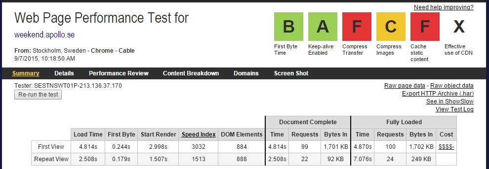
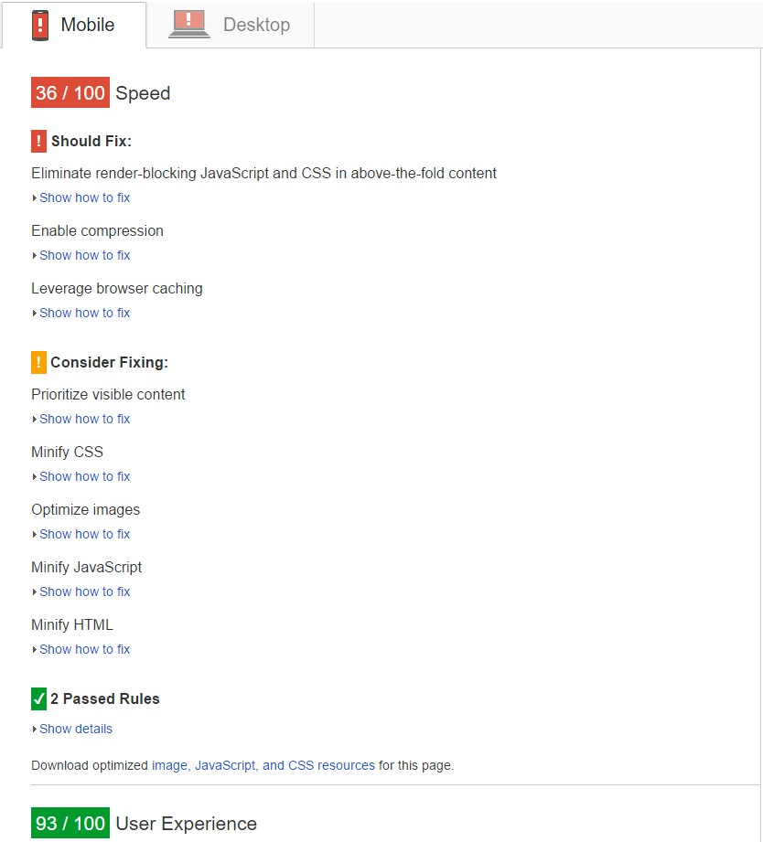
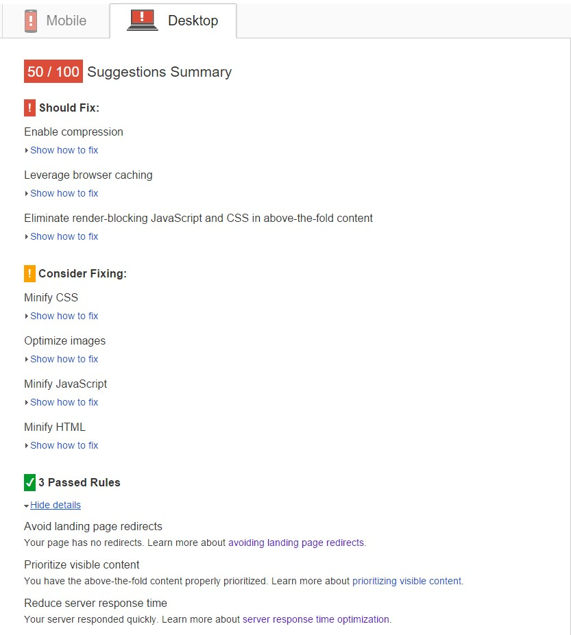
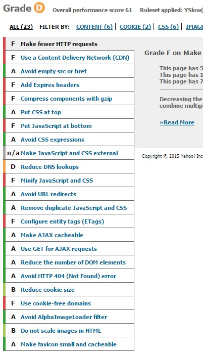

Web Performance
Possible optimizations of the new platform (Kuoni site)
Created by Mindaugas Murauskas / @minusm
Why?
“Performance is a feature. Deliver your content to users as quickly as possible. Once they're in your app, make page interaction and rendering as smooth as possible.”
Goal?
1000ms
Current situation
WebPageTest.org
WebPageTest.org
Google Page Insites
|  |  |
YSlow
Google Chrome Developer Tools
Compression
Enabling gzip compression can reduce the size of the transferred response by up to 90%
browser caching
Setting an expiry date or a maximum age in the HTTP headers for static resources instructs the browser to load previously downloaded resources from local disk rather than over the network.
Eliminate render-blocking
Solution
- Move JS to bottom and allow parser do it's job
- If we can't move JS to bottom, at least order CSS to be first and JS second
- Make JS Asynchronous using the HTML
asyncattribute
Minify all
Minification refers to the process of removing unnecessary or redundant data without affecting how the resource is processed by the browser.
Solution
Some files are still not minified, but biggest part is ok. Hurray!
How it's done?
Optimize Images
Images often account for most of the downloaded bytes on a page. As a result, optimizing images can often yield some of the largest byte savings and performance improvements.
Solution
It depends...
Reduce HTTP requests
We have 72 of them on frontpage
Decreasing the number of components on a page reduces the number of HTTP requests required to render the page, resulting in faster page loads.
Solution
- Remove what's not needed.
lodash.backbone.jslooks strange - Lazy load some of parts as
mro.itemmap.jsandmaps.googleapis.com... - Concatinate
mro.*.jsand/orfiles/2/*.js